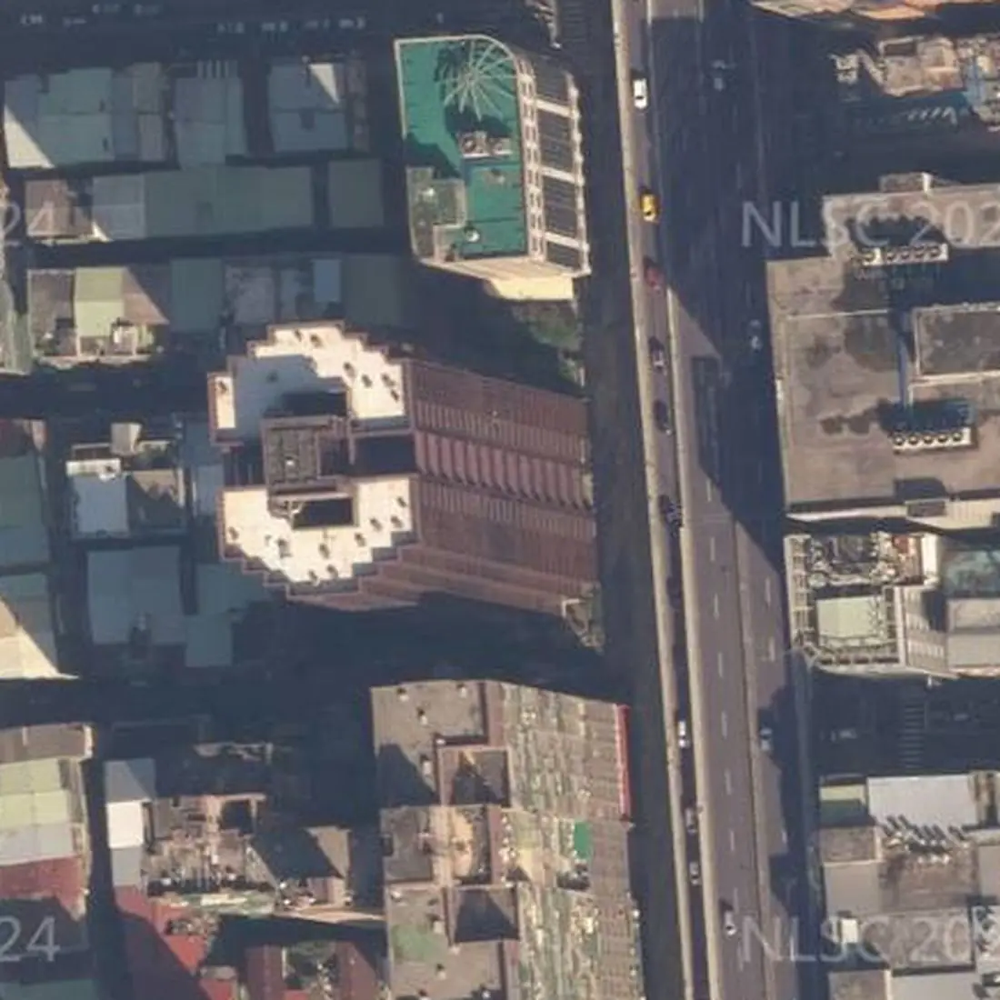

社區分析・文字版
鑽石名門可以買嗎？中和中正路社區優缺點、格局、捷運、日照、學區、車位與看屋重點
帶看鑽石名門時，買方最常問的就是下面這幾題。我把查過的資料整理在這篇，每一題第一段先講結論，跟上面的互動簡報（3D 模型、日照模擬、步行地圖）是同一份資料，數字都標了出處，實際狀況還是要以現場為準。
鑽石名門可以買嗎？先說結論
鑽石名門位於新北市中和區中正路797號、799號（同一社區相鄰門牌），屬積穗（中和），民國86年11月完工，地上27層。走到捷運橋和站（Y13）步行約1,085公尺、約16分鐘。優點是日常採買步行 4 分鐘、國小、國中步行可達、27 層大樓、4 部電梯、坡道平面車位；要留意的是東側緊鄰高架快速道路、低樓層西向受透天厝遮蔽。
適不適合，要看你最在意的是什麼。下面把買方最常搜尋的問題一題一題整理，每題第一段先講結論，數字都標了出處，實際狀況還是以現場為準。

從空中看鑽石名門
社區是一棟 27 層的玻璃帷幕大樓，東側緊鄰中正路與上方的快速公路高架，西側是 4～5 層的透天厝。三張航照由近到遠，依序是社區本身、周邊街廓與中和區的位置。
鑽石名門格局有哪些？幾房、幾坪？
依實價登錄申報資料（截至 115/11/01 公布），鑽石名門有成交紀錄的住宅以4房以上最多（20筆），主建物約36.1～43.1坪。
| 房數 | 筆數 | 主建物坪數 |
|---|---|---|
| 4房以上 | 20 | 36.1～43.1 坪 |
| 其他 | 2 |
資料來源：內政部實價登錄，依申報的「建物現況格局」與「主建物面積」整理；為申報資料，可能與現況不同（例如改過隔間），不代表個別房屋。已排除特殊交易與預售屋，只計住宅用途；同一戶多次成交只計一次，只涵蓋有成交紀錄的戶。資料截至 115/11/01 公布，之後的新成交未納入，以內政部最新資料為準。坪數為主建物面積（不含附屬建物、陽台與公設），平方公尺換算成坪、取小數一位；筆數少於 3 筆的房數併入「其他」。僅供參考，實際以權狀與現場為準。
鑽石名門實價登錄有幾筆成交？
查詢範圍：新北市中和區中正路797號、799號（同一社區相鄰門牌），近 60 個月、全部建物型態，共 16 筆（797號 8 筆、799號 8 筆）。
社區登錄的戶型多為 57～69 坪（含車位）的三房以上戶型，另有一筆 2 樓整層 198.69 坪。
資料至 115 年第 3 季，之後的成交以實價登錄網最新公告為準。表格照實價登錄原始資料抄錄，未重算；部分筆數備註欄另有登記事項（如陽台外推），請以實價登錄網原文為準。
鑽石名門到捷運站走路多久？
捷運橋和站（Y13）步行約1,085公尺、約16分鐘；捷運中原站（Y14）步行約957公尺、約14分鐘；捷運中和站（Y12）步行約1,386公尺、約20分鐘。
最近的公車站：平河里步行約23公尺、約1分鐘。
步行距離資料來源：Google 地圖規劃建議路線，實際以現場為準。
鑽石名門日照好嗎？冬天曬得到太陽嗎？
朝西的這一面，陽光主要在下午照進來。低樓層傍晚會被西邊的透天厝擋住，樓層越高影響越小。
這是模擬示意，挑房子的時候，記得下午來現場看看。
日照會因為面向、樓層、前後棟距差很多，看屋時建議上午、下午各去一次，站到窗邊看實際的採光與視野。
太陽位置：天文公式計算；日射：晴天直射理論值，不含散射與雲量；參考政府公開資料；社區以 27 層估計；結果為示意，實際以現場為準。
鑽石名門學區是哪裡？
依政府公開資料，鑽石名門的學區為積穗國小、積穗國中，實際以教育局公告為準。
學區每年可能調整，入學前記得再向學校或教育局確認。
走路到學校：積穗國小步行約383公尺、約6分鐘；積穗國中步行約705公尺、約10分鐘（步行距離資料來源：Google 地圖規劃建議路線，實際以現場為準）。
鑽石名門有車位嗎？車位有多少？
車位類型：坡道平面（實價登錄）。
看屋時建議確認車位的產權登記方式、位置與進出動線，機車位是否需要另外申請。
電動車充電：可以先問管委會的事
- 社區規約或管理辦法有沒有「電動車充電設備設置與管理」的條文？可以提供影本嗎？
- 地下室有沒有公共充電車位？是用公電還是專用電表？
- 住戶在自己車位加裝的申請流程：要附哪些文件（電機技師或承裝業評估、施工切結、保險）？要管委會核准還是區權會決議？
- 住戶電表集中在地下室，還是在各樓層？（影響拉線難度）
充電設備能否加裝，需依社區規約、管委會或區分所有權人會議決議，以及電機技師與台電的用電評估而定。
鑽石名門公設有哪些？公設比多少？
公設比約 21%（依內政部實價登錄面積計算：住宅成交 24 筆的中位數，資料期間 110S2～115S4，截至 115/11/01 公布）。
公設實際開放時間與使用規定，以管委會公告與規約為準，看屋時可以請管理室帶看。
公設資料來源：公設比：內政部不動產交易實價查詢服務網買賣資料的面積欄位，以（建物移轉總面積－車位面積－主建物－附屬建物－陽台）÷（建物移轉總面積－車位面積）計算，已排除特殊交易與預售屋
鑽石名門有管委會嗎？管理方式怎麼樣？
管理方式：有管理。
看屋時可以向管理室確認：社區規約、管理費收取方式、公共基金與近期公共修繕計畫，以及有沒有進行中的社區爭議。
鑽石名門生活機能方便嗎？超市、超商、市場走路多久？
步行可到：美廉社步行約287公尺、約4分鐘；全聯福利中心步行約298公尺、約4分鐘；民樂人行廣場步行約314公尺、約5分鐘；衛生福利部雙和醫院步行約1,662公尺、約24分鐘。
- 美廉社（超市）：步行約287公尺、約4分鐘
- 全聯福利中心（超市）：步行約298公尺、約4分鐘
- 民樂人行廣場（公園）：步行約314公尺、約5分鐘
- 衛生福利部雙和醫院（醫療院所）：步行約1,662公尺、約24分鐘
步行距離資料來源：Google 地圖規劃建議路線，實際以現場為準。地點名稱與位置參考政府開放資料與連鎖店官方門市查詢。
鑽石名門是哪一年完工的？幾層樓、幾戶？
鑽石名門民國86年11月完工、地上27層、地下4層、鋼骨鋼筋混凝土造。
| 完工 | 民國86年11月 |
|---|---|
| 樓高 | 地上27層 |
| 地下層 | 4層 |
| 結構 | 鋼骨鋼筋混凝土造 |
| 外觀 | 玻璃帷幕 |
| 電梯 | 4部 |
| 管理 | 有管理 |
| 用途 | 集合住宅 |
| 車位 | 坡道平面（實價登錄） |
| 臨路 | 中正路24米 |
資料：建物登記與公司委託資料（完工日、樓層、結構、電梯、管理、臨路寬度）；參考政府公開資料；實際以現場與地政登記為準。
鑽石名門優缺點有哪些？
優點：日常採買步行 4 分鐘；國小、國中步行可達；27 層大樓、4 部電梯、坡道平面車位。要留意：東側緊鄰高架快速道路；低樓層西向受透天厝遮蔽。
日常採買步行 4 分鐘
全聯福利中心步行約 298 公尺、約 4 分鐘；美廉社步行約 287 公尺、約 4 分鐘。
國小、國中步行可達
積穗國小步行約 383 公尺、約 6 分鐘；積穗國中步行約 705 公尺、約 10 分鐘；民樂人行廣場步行約 314 公尺、約 5 分鐘。學區以教育局公告為準。
27 層大樓、4 部電梯、坡道平面車位
社區地上 27 層、地下 4 層，鋼骨鋼筋混凝土造、玻璃帷幕外觀，4 部電梯、有管理；實價登錄的成交紀錄車位多為坡道平面。公車站「平河里」就在附近。
鑽石名門缺點是什麼？看屋時要確認什麼？
看鑽石名門要先確認的是：東側緊鄰高架快速道路；低樓層西向受透天厝遮蔽。
東側緊鄰高架快速道路
社區東側的中正路上方是東西向快速公路（八里新店線）高架，與社區建物東緣直線約 20～30 公尺。看屋時請分別在尖峰與夜間時段，關窗、開窗各聽一次車流聲。
低樓層西向受透天厝遮蔽
社區西側是 4～5 層的透天厝，低樓層西向的窗戶在傍晚會被擋住，越高的樓層受影響越少。挑房時建議下午到現場，看窗外視野與室內亮度。
鑽石名門社區分析影片

▶ 【社區分析】中和鑽石名門｜中和區中正路｜日照・交通・生活機能・實價登錄｜板橋阿陞聊房（YouTube）
鑽石名門附近社區
想一次比較位置，可以看板橋商圈地圖，或回首頁看全部社區分析。
想看鑽石名門？
想知道鑽石名門目前有沒有房子在賣，歡迎聯絡。
☆預約看屋請聯絡：林津陞 0925-635-678
加官方 LINE：@banqiao.asheng，聊天室輸入「攻略」，系統自動傳送《買房避坑攻略》電子檔（約2萬字／38頁）
全國不動產板橋加盟店
經紀業｜非凡不動產有限公司
經紀人｜謝政峯（99）北縣字第002181號
營業員｜林津陞（99）登字第148103號
資料來源：參考政府公開資料（依政府資料開放授權條款使用）；地圖：© OpenStreetMap contributors（ODbL）。步行距離與日照為規劃與模擬結果，學區以教育局公告為準，房屋資訊仍須以現場、產權資料及正式文件為準。